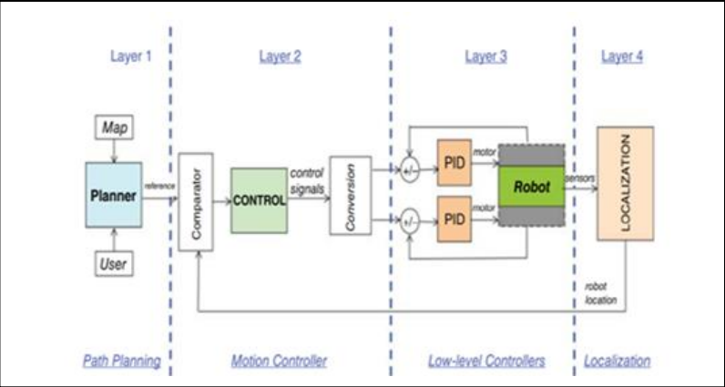
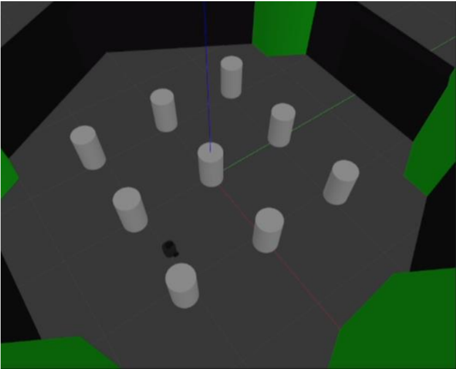
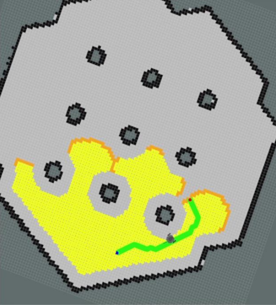
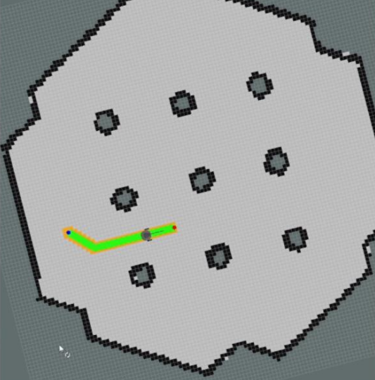

<!DOCTYPE HTML>
<html>
<head>
    <meta charset="utf-8" />
    <meta name="viewport" content="width=device-width, initial-scale=1, user-scalable=no" />
    <link rel="stylesheet" href="assets/css/main.css" />
    <!-- Include the smooth scrolling script -->
</head>
<body class="is-preload">

    <!-- Include the navigation section -->
    <style>
        /* Add some style to the nav element */
        
        nav {
          background-color: transparent; /* Change the background color to a light gray */
          border: 1px solid; /* Add a thin border around the nav element */
          margin: 0; /* Remove any margin around the nav element */
          padding: 10px; /* Add some padding inside the nav element */
        }
      
        /* Add some style to the ul element */
        ul {
          list-style-type: none; /* Remove the bullet points from the list */
          margin: 0; /* Remove any margin around the list */
          padding: 0; /* Remove any padding around the list */
          display: flex; /* Make the list items display horizontally */
          justify-content: space-around; /* Distribute the list items evenly */
        }
      
        /* Add some style to the a elements */
        a {
          text-decoration: none; /* Remove the underline from the links */
          color: inherit; /* Change the link color to a dark gray */
          font-family: inherit, sans-serif; /* Change the font family to match the website */
          font-size: 24px; /* Change the font size to match the website */
        }
      
      </style>
    <!-- Navigation -->
    <nav>
        <ul class="links">
          <li><a href="index.html" class="button">Home</a></li>
          <li><a href="about.html" class="button">About</a></li>
          <li><a href="https://drive.google.com/file/d/1loMpnZcO7jKCdIIQHXcSi6whGr0sXeQz/view?usp=sharing" target="_blank" class="button">Resume</a></li>
        </ul>
      </nav>

    <!-- Include the header section -->

    <!-- Main content specific to project1.html -->
    <div id="main">
        <div class="box alt container">
          <p style="text-align: justify;">Skills: ROS, Gazebo, Rviz, Docker, SLAM, C++</p>
					<header>
						<h2>Robotic path planning with Turtle bot 3</h2>
					</header>
					<section>
						<header>
							<h3>Aim of the Project</h3>
							<!-- <p>This is the subtitle for this particular heading</p> -->
						</header>

						<p style="text-align: justify;">Till now, many path planning algorithms have been 
              proposed in the literature. The objective of these algorithms is to 
              find the quickest path between initial position to the end position
              in a certain environment. The complexity of these algorithms 
              depends on the internal parameters such as motor speed or 
              sensor range and on other external parameters, including the 
              accuracy of the map, size of the environment, and the number of 
              obstacles. In this paper, we are giving information about how 
              path planning algorithm finds the optimal path in an uneven 
              terrain with a multiple obstacle using TurtleBot3 robot into the 
              Gazebo environment using Dijkstra's and A*.
              </p>
					</section>
					<section>
						<header>
							<h3>Introduction</h3>
						</header>
						<p style="text-align: justify;">A fundamental task for any mobile robot is its capability to 
              organize collision-free trajectories from point A to point B, a 
              start to a end position or visiting a series of positions, i.e. 
              regions of interest. When provided a map and a end point, path 
              planning includes selecting the best (collision free, if 
              applicable) trajectory that the robot can follow to reach the goal 
              position. Ultimately, this is a problem of finding the optimal 
              subset from a set of possible trajectories that robot could follow
              while transitioning to the target location.
              For the robot to be Reliable and effective in an 
              environment, an efficient path planning algorithm is needed. In 
              this project we discuss and implement the A* search-based algorithm using ROS. Search algorithms 
              are widely used to solve problems that can be modeled as a 
              graph. The quality of the produced path affects immensely the 
              robotic application, because in the worst cases scenario most 
              of the path planning algorithms won't show the optimal path. 
              Usually, the minimization of the covered distance is the 
              primary aim of the navigation process as it impacts the other 
              system of measurement such as the dealing with time and the 
              power consumption.<br>
              <center></a><br><br></center>

              1. PROBLEM FORMULATION<br>
The focus of this project is path-planning, which involves 
finding the optimal or near-optimal path from point A to point 
B. The aim here is to find the shortest path, optimally, that 
minimizes computation and maximizing the efficiency of the 
robot. That is, we would like the robot to get to a goal state 
while using the least amount of energy possible.
Planning a pathway in large-scale environments is more 
difficult as the trouble turn out to be further complex and timeconsuming which is not suitable for robotic applications in 
which real-time aspect is crucial. <br><br>
2. PROPOSED SOLUTION<br>
For this problem we would first like to understand the given 
environment, understand the robot dynamics, and apply both 
the environment model and the robot dynamic to a well-suited
algorithm, A* search-based algorithm in this case. Figure 2
shows the TurtleBot3 which we have used in our simulation for 
path planning. TurtleBot3 is one of the types of differential 
drive mobile robot. Here we are implementing TurtleBot3 into 
the known environment with multiple obstacles. After 
generating the map of the environment, we have implemented 
the path planning algorithm to find out the shortest path 
between the current location to the end location. Remember 
that, for path planning, we must know the current and goal 
position of the bot. Below are details on the different 
components involve in solving this problem: <br><br>

<section>
  <header>
    <h3>The Environment Map</h3>
  </header>
We first would like to know the map of the environment. A
map of the environment is essential to solving this problem.
The map provides a foundation or guide or a frame for 
referencing the robot pose. Using this environment map, we 
can generate a state/node-based graph representation of the 
environment. This graph provides us with a low-level
deterministic understanding of all possible occupancy in the 
environment. However, for the graph to be consistent or 
representative of possible actions of the robot, it must be 
generated using the state-action simulation of the robot. This is 
where the robot’s state-space model comes in handy. Below figure shows the simulated gazebo environment. <br><br>
<center>  </a></center><br>

<section>
  <header>
    <h3>Robot State Estimation Model</h3>
  </header>
For the python 2D simulation, the accuracy of the statespace model plays a very important role in the accuracy of 
predicting the robot’s pose within the environment at 
simulated time step. That is, we do not want to predict a state 
of the robot that varies drastically from the observable state 
within the environment. The use of an observation and the 
Extended Kalman Filter can greatly improve the confidence of 
estimation. <br><br>
i. Generated Graph<br>
After the graph representation of the environment is 
generated, the node within the graph that is closest to the 
target’s location is designated as the goal node. Using this goal 
node, the initial starting point of the robot, and the graph itself, 
an appropriate search-based algorithm is implemented.<br><br>
ii. The Search Algorithm<br>
Search algorithms are widely used in solving search 
problems. Search problems represents a binary relationship
between entities [2]. That is, the goal of the problem is to find 
a structure ‘s’ in an object ‘o’, and an algorithm solves this 
problem by finding at least one corresponding structure [3].
Such problems occur commonly in graph theory, for example, 
searching a graph for matches, cliques, or an independent set. The search algorithm of choice in this project was the A* 
algorithm.</section>
<br>
<section>
  <header>
    <h3>Challenges</h3>
  </header>

  <ol class="default">
    <li>One of the challenges in this project was the Formulation 
      of the problem into the search-based domain. That is, 
      coming up with a best way to model the problem so that it 
      can be modeled as a graph.</li>
    <li>There were a few challenges in writing the python 
      algorithm for recursively simulating the robot states/nodes
      in the environment for graph-map generation.</li>
    <li>There were also challenges in plotting and simulating in 
      the python 2D matplotlib environment.</li>
    <li>We had challenges in setting up the ROS gazebo 
      environment for simulating the A* algorithm using 
      Turtlebot.</li>
  </ol>
 
  <section>
    <header>
      <h3>RESULTS</h3>
    </header>
    <p>Implementation of A* algorithm</p>
    <center style="font-size: 0;">
      <video width="1100" height="720"  autoplay muted>
        <source src="images/Project5/A star.mp4" type="video/mp4">
      </video></center>

      <p>Implementation of Dijkstra's algorithm</p>
      <center style="font-size: 0;">
      <video width="1100" height="720" autoplay muted>
        <source src="images/Project5/D.mp4" type="video/mp4">
      </video>
    </center>

    
    
  
<br>
For the ROS implementation using Turtlebot3, we first 
generated a map of the environment using SLAM navigation, 
for which we used the g-mapping package available in ROS. 
Once we have the generated map, we loaded the map onto the 
visualization tool known as RVIZ. We assigned the end 
location into the map. The robot then implemented the 
algorithm which started to calculate the shortest path between the current location to the end location. Here we have 
compared the Dijkstra's and A* algorithm. <br>By leveraging insights gained from these studies, we enhanced our understanding of optimal trajectory generation and obstacle avoidance strategies, 
thereby enriching the navigation framework implemented in this project. <br><br>

<center></a>
</a></center><br>

<section>
  <header>
    <h3>CONCLUSION</h3>
  </header>
In this paper, Simultaneous Localization and Mapping and 
Path Planning interfaced with Turtle-Bot3 to allow for safe 
and fast navigation from the initial position to end position. It 
introduced a Mapping and Planning pipeline for ground robot 
navigation in generated map space. A* introduces an optimal 
path generation with heuristic function for increasing the 
efficiency of the mobile robot. When compared to Dijkstra’s 
algorithm, A* shows the high success rates which find its path 
in a short amount of time. As a result, this allows the robot to
consume the least amount of energy. Moreover, TurtleBot3 is 
avoiding safely the obstacles that exist in the environment and
following its optimal and obstacle-free route accurately.
</p>
<p></p>
                                <ul class="links">
                                    <li><a href="index.html" class="button">Home</a></li>
                                  </ul><br>
<ul class="links">
    <li><a href="https://twitter.com/urviskumar23326" >Twitter</a></li>
    <li><a href="https://www.linkedin.com/in/urvishkumar-bharti-092b5b18b/" >LinkedIn</a></li>
    <li><a href="https://github.com/Urviskumar" >Github</a></li>
</ul>


<!--


					<section>
						<header>
							<h3>Table</h3>
						</header>
						<div class="table-wrapper">
							<table class="default">
								<thead>
									<tr>
										<th>ID</th>
										<th>Name</th>
										<th>Description</th>
										<th>Price</th>
									</tr>
								</thead>
								<tbody>
									<tr>
										<td>45815</td>
										<td>Something</td>
										<td>Ut porttitor sagittis lorem, quis eleifend nisi ornare vel.</td>
										<td>29.99</td>
									</tr>
									<tr>
										<td>24524</td>
										<td>Nothing</td>
										<td>Ut porttitor sagittis lorem, quis eleifend nisi ornare vel.</td>
										<td>19.99</td>
									</tr>
									<tr>
										<td>45815</td>
										<td>Something</td>
										<td>Ut porttitor sagittis lorem, quis eleifend nisi ornare vel.</td>
										<td>29.99</td>
									</tr>
									<tr>
										<td>24524</td>
										<td>Nothing</td>
										<td>Ut porttitor sagittis lorem, quis eleifend nisi ornare vel.</td>
										<td>19.99</td>
									</tr>
								</tbody>
								<tfoot>
									<tr>
										<td colspan="3"></td>
										<td>100.00</td>
									</tr>
								</tfoot>
							</table>
						</div>
					</section>
					
				</div>
				
-->
